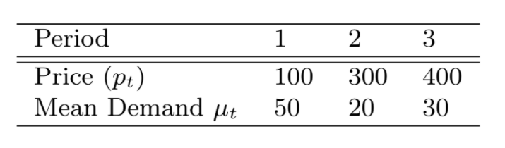

Multi-Stage Revenue Management with Inter-Temporal Dependence¶
This example is adapted (almost verbatim) from test problem 2 by Prof. J.M. Harrison for class OIT 603 at Stanford University.
Problem Statment¶
A businessman chooses to buy \(b > 0\) units of capacity, paying \(c > 0\) dollars per unit of capacity at \(t = 0\). During stage \(t (t = 1, . . . , T)\) he observes demand \(D_t\) for units at price \(p_t\), at which point, he must choose to sell \(x_t\) units \((0 ≤ x_t ≤ D_t)\), provided that the total number of units sold (accross all past periods) does not exceed \(b\).
To better understand the initial capacity and selling decisions, consider the following: There is a large initial capacity \(b\) (units purchased). In period 1 the businessman receives a certain demand for units at low price \(p_{low}\). The decision at period 1 is, esentially, choosing a number of units to be sold right now in order to reserve some units for customers arriving later because they will pay more for the product; The opportunity cost for each unit of capacity reserved is now \(p_{low}\). Thus, in order to make a wise decision at period 1, the businessman must consider later demand.
Assume that \(D_t = μ_tXY_t\) where \(X\) has a gamma distribution with parameters \(k > 0\) and \(θ > 0\) such that it has mean \(kθ = 1\) and standard deviation \({\sqrt{k}}θ = 1/ {\sqrt{k}}. Y_1, . . . , Y_T\) are i.i.d. exponential with mean 1 and \(μ_t\) are positive constants (\(\forall\:t\)).
Our goal is to calculate how many units should purchased (\(b\)) and how many units should be reserved for future periods in order to maximize total revenue. In other words, we want to find b and \(r_t, t = 2, . . . , T\) so that, if the number of units sold in all periods before \(t\) is less than \(b − r_t\) (\(r_t\) units are reserved for periods \(t, t + 1, . . . , T\)), revenue is maximized.
Recommended Parameters: Take \(c = $80, T = 3, k = θ = 1\) and \(μ_t, p_t\) as follows:
{kind=link}
Starting Solutions: \(b\) = 100, \(r_2\) = 50, \(r_3 = 30\). If multiple solutions are needed, use \(r_2\) ∼ Uniform(40,60) and \(r_3\) ∼ Uniform(20,40).
Measurement of Time: Number of periods
Optimal Solution: Unknown
Factors¶
Time Horizon: Period of time that is considered
Prices: Prices for each Period
Demand Mean: Mean demand for each period
Cost: Cost per unit of capacity at \(t = 0\)
**Gamma Shape(k): Shape parameter of gamma distribution
Gamma Scale(theata): Scale parameter of gamma distribution
Initial Inventory: Initial Inventory
Reservation Quantity: Inventory to reserve going into periods \(2, 3, ..., T\).
Responses¶
Revenue: Total revenue of given model